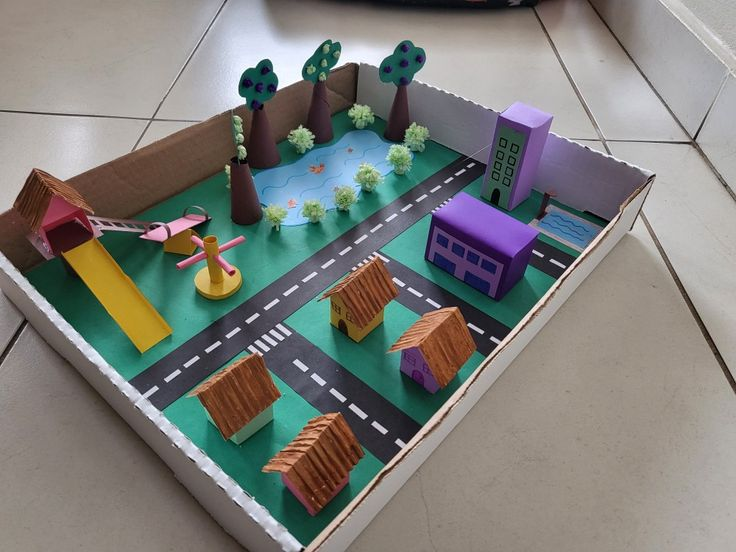

A acessibilidade visual refere-se à capacidade de tornar informações visuais acessíveis a todas as pessoas, independentemente de suas limitações visuais. Isso inclui a criação de designs e conteúdos que possam ser facilmente compreendidos por pessoas com deficiência visual, como cegueira ou baixa visão.
A programação é o processo de traduzir ideias e soluções humanas para uma linguagem que os computadores consigam entender e executar. Por meio de linhas de código, nós conseguimos criar desde aplicativos simples de celular e jogos divertidos até sistemas complexos de inteligência artificial que mudam o mundo. Mais do que apenas digitar comandos em um computador, programar é desenvolver o raciocínio lógico e a habilidade de resolver problemas, transformando linhas de texto puras em ferramentas reais que facilitam e automatizam o nosso dia a dia.